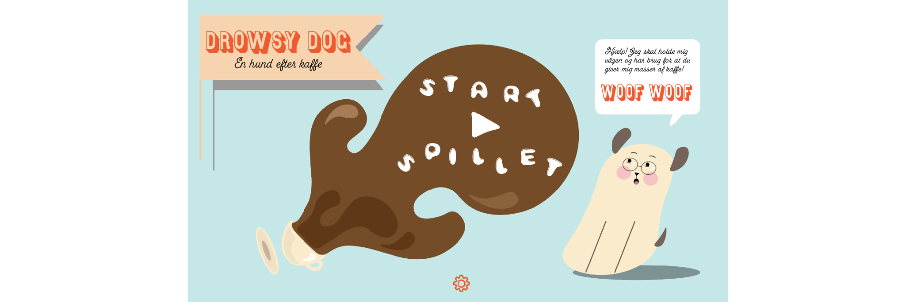
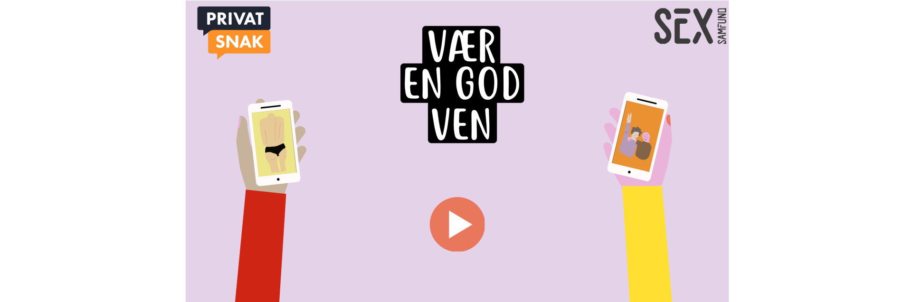

Tema_04
Grundlæggende animation
I tema_04 blev vi introduceret til den interaktive brugeroplevelse. Det handler om at skabe motivation for brugeren ved at skabe liv og interaktive elementer som f.eks. animationer af knapper, lyde og bevægelser. Dette skulle vi lære gennem udviklingen af vores eget animationsspil. Her blev vi introducret til javascript, komposition, det gyldne snit, lyd, farver og former i spildesign.
Vi skulle altså skabe et spil helt fra bunden og det skulle vi bl.a. gøre med de redskaber vi allerede havde fået i de tidligere temaer - vi skulle tegne og desgine vores figurer og UI elementer (de klikbare og de interaktive) i Adobe Illustrator og lave et aktivitetsdiagram og statemachinediagram for spillets struktur i google docs. Ligesom med de andre temaers idegenerering skulle vi selvfølgelig også lave skitser, research til inspitration og moodboard. Denne idégenering skulle munde ud i en assetliste som er en liste over alle de elementer der er i spillet. Alle disse metoder har jeg også anvendt til udviklingen af mit spil.
Eget animationsspilspil
Drowsy Dog - En Hund Efter Kaffe
Design proces
Jeg valgte at tage inspiration i flatdesign og tog mest af alt inspiratoion fra en tegneserie der hedder Adventure Time. Jeg valgte også at lave mit spil i de samme mættede farvetoner. Jeg holdt mit spildesdign simpelt og roligt og valgte de runde bløde former for at skabe denne ro. Mit valg af typografi skulle have en tegneserie fornemmelse, og derfor valgte jeg netop skrifttyperne 'WTR Gothic Spen Shaded', 'Fairwater Scripts Regular' og 'Bubblegum Pop'. Jeg brugte min styletile til at definere spillets udtryk og mine designvalg.

Spillets struktur laves udfra ideen til spillet. Det vil sige at man skitserer og noterer hvordan spillet skal se ud, hvordan man spiller det og hvad det går ud på. Man skal altså visualisere de enkelte handlinger i spillet, og hver handling leder til en ny handling som man også skal have med. Alt dette gøres med et aktivitetsdiagram og et statemachinediagram. Aktivitetsdiagrammet er en overordnet 'handlings plan' for spillet, altså hvordan spiller man og hvad sker der. Et statemachinediagram er en detaljeret plan over hver enkel handling der kommer til at ske i spillet via javascript.
Desværre så virker mit spil ikke helt optimalt endnu.

Gruppespil om billeddeling - Sex og Samfund
Vær En God Ven

I gruppeopgaven 'Billeddeling' blev vi stillet en opgave om at skabe et spil i et fiktivt samarbejde med Sex og Samfund og Privat Snak. Ideen bag var at skabe opmærksomhed omkring billedddeling i aldersgruppen 13-15 år, og hvilke retningslinjer der skal tages i sådanne situationer. Spillet ville tilsidst blive spillet af nogle folkeskoleelever til en fernisering.
Vær En God Ven gåt ud på at skynde sig at slette 10 nøgenbilleder før de bliver delt. Hvis man kommer til at slette et billede af sine venner så mister man et liv. Til ferniseringen havde vi fået trykt nogle klistermærker som man kunne få hvis man vandt spillet.
Proces
Vi startede med at lave research om billeddeling, Sex og Samfund og Privat Snak. På den måde fik vi også indblik i hvad billeddeling var og hvordan vi bedst at formidle denne viden til vores målgruppe. Gennem vores interview af vores testperson (14 årige Bertram) fik vi en hel del brugbar information som vi kunne implementere i vores udvikling af spillet. F.eks. havde vi fået af vide at der skulle mere tempo på og at tiden var essentiel for at det var et sjovt spil. Derefter viste vi vores materiale til en ung pige og hun mente at de nøgne kroppe var for detaljeret og det fiksede vi til at passe bedre til vores målgruppen.
Vi skulle arbejde med et 'burn down chart' som er en måde at visualisere ens opgaver bliver færre mens man når sit mål, det vil sige at man sætter et punkt for det antal opgaver man har og hver dag skulle dette punkt gå ned og til sidst ramme nul. En anden metode vi brugte til at holde styr på vores projekt var at lave et 'trello board'. En webside hvor man kan skabe et board for et projekt og skrive alle sine opgaver op og flytte dem efterhånden som de bliver færdige. Dette viste sig at være essentielt for at holde styr på vores udvikling. Derudover var jeg scrum master for min gruppe. Det vil sige at jeg var den der havde overblik og styrede vores 'morning scrum meeting' hvor vi briefede hvad der skulle ske den dag.
Det var lærigt at skab et interaktivt produkt ud fra en målgruppe. Selvom det var fiktivt så fik jeg en grundlæggende forståelse for hvordan interaktive midler kan skabe en mere interessant oplevelse for en bruger. Derudover var det igen spændende at skabe et produkt i en gruppe. Man inspirerer og votivere hinanden på mange måder.